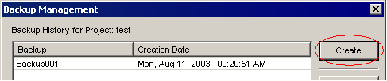
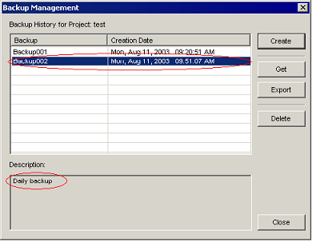
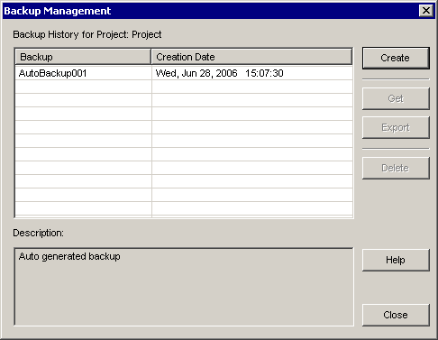

|
|
|
|
|
|
|
|
When you create a project backup, the backup file is stored in C:\Documents and Settings\"UserName"\My Documents\Vijeo-Designer\Vijeo-Manager\'ProjectName"\*.bkm. You can create backup files for your project using these two methods:
Manual backup. This method allows you to create backups and to specify a name for your backup file.
Auto backup. When enabled, this method automatically backs up all your projects and assigns a file name for your backup file.
In the Navigator's Vijeo-Manager tab, right-click a project and click Backup Manager to open the Backup Management dialog box.
In the Backup Management dialog box, click Create to open the Create Backup dialog box.

In the Create Backup dialog box, enter a name and description for the backup file.
Click OK to return to the Backup Management dialog box.
The backup file's name, description, and date of creation are recorded in the backup history. The description is displayed when a backup is selected.

In the Vijeo-Manager properties, set up Auto Backup. For more information on the Auto Backup property, see Section 4.6.3, Arranging Projects in the Vijeo-Manager Node.
Backup files are named AutoBackupXXX, where XXX is a three-digit number starting at 001. You will find these backup files in the Backup Management dialog box.
